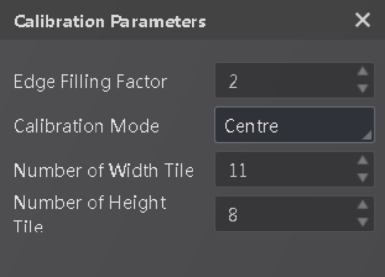

Lens shading correction (LSC) is also known as vignetting correction. It is used to adjust an image's brightness or saturation toward the periphery compared to the center of the image.
You can do lens shading correction by uploading local parameters or manual calibration. If you choose the latter, you'll need to configure the following calibration parameters.

Figure 1 Lens Shading CorrectionPad the edge around a pixel according to the configured coefficient.
The basis for lens shading correction. You can choose to correct the lens shading based on that of the center, the brightest area, or the target gray value.
These two parameters determine the accuracy of calibration. The greater the value, the higher the accuracy.